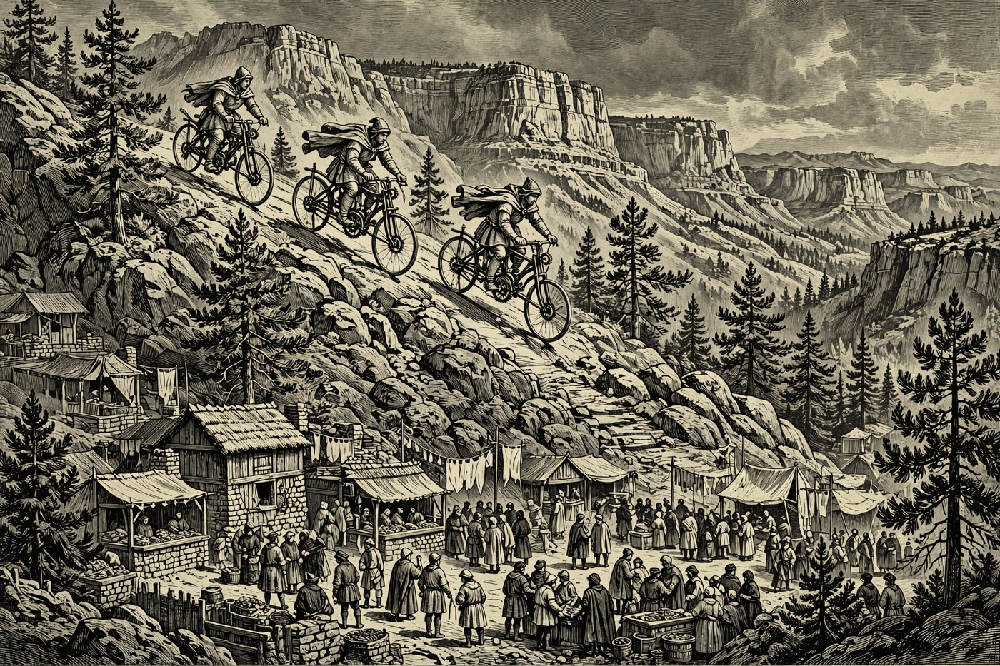

Hail, traveler, and pull your cloak close — Turdas dawns grey and cool over the Rim this Thursday, November 5, with a high of 60, overcast skies, light winds, and no rain in it at all. The Holds spend the day well anyway: a farmers market down in Cornville at 2:00 PM, tai chi in Pinetop-Lakeside at 10:00 AM, and Prescott keeping its courthouse lit with a live auction from 4:00 PM. And the whole week is gathering behind today like riders at a trailhead — the great Sedona Mountain Bike Festival opens Friday, November 6, a Pine fish fry fries the same night, and a star party, an open mic, and a veterans concert follow close behind. By the Nine, a grey sky is no excuse at all: the mead is warm, the tables are full, and the road is calling.
Happening in the Holds Today
 Payson— “Got Sneakers” Recycle and Fundraiser runs all day today, Thursday, November 5, in the Payson Unified School District, and continues through November 19. Old sneakers that might have gone to the midden instead get a second road to run, and the drive raises funds along the way. It is an easy good deed for guests with a spare pair in the wagon — ask at a school office where the collection stands. A small quest, honestly, but the best kind: one anybody can finish before supper.
Payson— “Got Sneakers” Recycle and Fundraiser runs all day today, Thursday, November 5, in the Payson Unified School District, and continues through November 19. Old sneakers that might have gone to the midden instead get a second road to run, and the drive raises funds along the way. It is an easy good deed for guests with a spare pair in the wagon — ask at a school office where the collection stands. A small quest, honestly, but the best kind: one anybody can finish before supper. Camp Verde— Windmill Park Farmers Market sets up today, Thursday, November 5, from 2:00 PM at Windmill Park, 9950 E. Cornville Road in Cornville, down the Verde road from Camp Verde. Local growers and makers bring produce, baked goods, and handmade wares to an easy afternoon market in the valley. It is a fine excuse for a scenic ride and a full basket. Valley Dwellers climbing up for Rim Country air will find the valley itself in a generous mood.
Camp Verde— Windmill Park Farmers Market sets up today, Thursday, November 5, from 2:00 PM at Windmill Park, 9950 E. Cornville Road in Cornville, down the Verde road from Camp Verde. Local growers and makers bring produce, baked goods, and handmade wares to an easy afternoon market in the valley. It is a fine excuse for a scenic ride and a full basket. Valley Dwellers climbing up for Rim Country air will find the valley itself in a generous mood. Sedona— Sedona Mountain Bike Festival Robbers Roost Overnighter rolls out today, Thursday, November 5, from 10:00 AM at Cultural Park in Sedona. It is a group bikepacking trip tied to this weekend’s great festival — riders load their iron steeds, ride out under the red rocks, and camp like proper wayfarers. A fine warm-up for the festival crowds gathering tomorrow. If you meet them on the road, give them the wide side and a hail.
Sedona— Sedona Mountain Bike Festival Robbers Roost Overnighter rolls out today, Thursday, November 5, from 10:00 AM at Cultural Park in Sedona. It is a group bikepacking trip tied to this weekend’s great festival — riders load their iron steeds, ride out under the red rocks, and camp like proper wayfarers. A fine warm-up for the festival crowds gathering tomorrow. If you meet them on the road, give them the wide side and a hail. Show Low— Tai Chi meets today, Thursday, November 5, at 10:00 AM at the Community Center, 1594 Johnson Drive in Pinetop-Lakeside, just down the road from Show Low, and the first time is free. Slow, steady movement in good company — the sort of morning practice that leaves a traveler loose-limbed and clear-headed for the road. Newcomers are welcome at the back of the hall. Wear soft shoes and bring your patience; both will be used gently.— Intro to West Coast Swing steps out today, Thursday, November 5, at 6:40 PM at 640 E. White Mountain Blvd. in Pinetop-Lakeside, near Show Low. A beginner-friendly evening of swing dancing, where the first steps are taught plainly and nobody is left counting alone for long. Partners and solo travelers alike are welcome on the floor. By the Nine, even a bard needs a rest from the lute now and then — dancing will do it.
Show Low— Tai Chi meets today, Thursday, November 5, at 10:00 AM at the Community Center, 1594 Johnson Drive in Pinetop-Lakeside, just down the road from Show Low, and the first time is free. Slow, steady movement in good company — the sort of morning practice that leaves a traveler loose-limbed and clear-headed for the road. Newcomers are welcome at the back of the hall. Wear soft shoes and bring your patience; both will be used gently.— Intro to West Coast Swing steps out today, Thursday, November 5, at 6:40 PM at 640 E. White Mountain Blvd. in Pinetop-Lakeside, near Show Low. A beginner-friendly evening of swing dancing, where the first steps are taught plainly and nobody is left counting alone for long. Partners and solo travelers alike are welcome on the floor. By the Nine, even a bard needs a rest from the lute now and then — dancing will do it. Prescott— Live Auction — Courthouse Christmas Lighting Fundraiser Kick-Off Party runs today, Thursday, November 5, from 4:00 to 8:00 PM at the Jersey Lilly Saloon, 116 S. Montezuma Street in Prescott. Friends of the Jersey Lilly raise funds to keep Prescott’s famous courthouse lighting shining, with live and silent auction lots and a hall full of neighbors. Bid on something fine, or simply cheer the bidding on. Either way, the lights you enjoy in December start with nights like this one.— The Beauty of Granite Mountain is presented today, Thursday, November 5, at 7:00 PM at the Natural History Institute, 126 North Marina Street in Prescott. An evening given to the great granite shoulder that watches over the town — its stone, its trails, and the creatures that call it home. Lovers of the high country will feel right at home in the audience. Come learn why the Hold’s own Rim has a worthy cousin to the west.
Prescott— Live Auction — Courthouse Christmas Lighting Fundraiser Kick-Off Party runs today, Thursday, November 5, from 4:00 to 8:00 PM at the Jersey Lilly Saloon, 116 S. Montezuma Street in Prescott. Friends of the Jersey Lilly raise funds to keep Prescott’s famous courthouse lighting shining, with live and silent auction lots and a hall full of neighbors. Bid on something fine, or simply cheer the bidding on. Either way, the lights you enjoy in December start with nights like this one.— The Beauty of Granite Mountain is presented today, Thursday, November 5, at 7:00 PM at the Natural History Institute, 126 North Marina Street in Prescott. An evening given to the great granite shoulder that watches over the town — its stone, its trails, and the creatures that call it home. Lovers of the high country will feel right at home in the audience. Come learn why the Hold’s own Rim has a worthy cousin to the west.
The Days Ahead
- Fri, Nov. 6— Sedona Mountain Bike Festival opens Friday, November 6, at 9:00 AM at Posse Grounds Park, 525 Posse Grounds Road in Sedona, and runs through Sunday, November 8. Riders descend on Sedona’s famous red singletrack for demo rides, shuttles, and guided group rides, with food trucks, a beer garden, and live music between runs. The festival site says tickets will be sold daily at the registration booth during the event. By the Nine, it is the biggest wheel-show in the Holds this week.— First Friday Fish Fry and Bingo returns Friday, November 6, at the Pine Strawberry Community Center, 3916 AZ-87 in Pine. Fish is served from 4:30 PM at $7, $12, or $15, with homemade pie at $5, and bingo starts at 6:00 PM. The hall fills with neighbors, the fryers sing, and somebody always goes home hoarse from cheering a card. Arrive hungry and early — the pie has a way of vanishing first.— GrannyCore Christmas Sale opens Friday, November 6, in Payson and runs through Saturday, November 7, the Hold’s yard-and-estate-sales sheet reports. Early Christmas treasures, handmade and homey goods, and the sort of finds that start a season right — all gathered for two days. Treasure hunters should come with a list and leave with a story. Check the sales sheet on the Hearth’s table for the address before you ride out.
- Sat, Nov. 7— Noel Christmas Market at Noley’s fills Saturday, November 7, from 9:00 AM to 3:00 PM at Noley’s Books, Art & Whatnot, 103 E. State Hwy 260 in Payson. Books, art, gifts, and Christmas goods crowd the shelves and tables of the Hold’s beloved bookshop for one merry market day. It is the easiest early gift quest in town. Come for one present and leave, as everyone does, with three and a book for yourself.— Star Party at Red Rock State Park begins Saturday, November 7, at 5:30 PM at 4050 Red Rock Loop Road in Sedona. Telescopes come out as the light goes down, and the red rocks turn to silhouettes under a sky full of cold, bright stars. Guides help visitors find planets and constellations, so no star-lore is required — only warm layers. A clear desert night sky is pure mead for the eyes.
- Sun, Nov. 8— A Tribute to the Ol’ Cherokee Cowboy plays Sunday, November 8, at 3:00 PM at the Elks Theatre, 117 E. Gurley Street in Prescott. An afternoon of song and story in honor of a western legend makes a fine Sunday outing for music lovers. Expect warm harmonies, tall tales told straight-faced, and a room full of folks who know the choruses. Get there a little early for a good seat.
- Mon, Nov. 9— Open Mic Night: Music with a Purpose runs Monday, November 9, from 4:00 to 7:00 PM at THAT Brewery & Pub, 3270 AZ-87 in Pine. Singers, poets, and storytellers take the mic in the pines, hosted by members of the Fuel Reduction team, with tips benefiting fuel-reduction work that protects the Hold. Share a song, bring a guitar, or simply cheer your neighbors over a pint. Community vibes, music with a purpose — a bard’s night done right.
- Tue, Nov. 10— Veterans Day Celebration Concert sounds Tuesday, November 10, at 6:00 PM at Payson High School, 301 S. McLane Road in Payson, the town events calendar at payson.com says. The Hold gathers on the eve of Veterans Day to honor its veterans with an evening of music — the sort of night where the whole town sings a little straighter. Seats fill early for this one, friends. Arrive in good time, and bring your gratitude with you.— Trail Day Volunteer Build in Pine works Tuesday, November 10, from 7:00 AM to 12:00 PM off Highway 87 in Pine, with Pine Strawberry Fuel Reduction. Volunteers clear brush, move rocks, and shape a trail that will serve hikers, bikers, and firefighters for years — tools are provided, and no experience is needed. Bring water, sunscreen, gloves if you have them, and sturdy shoes. To volunteer, email trails@psfuelreduction.org for directions and details.